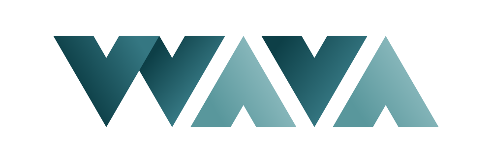

| Timeline | Engine | Team | Platform | Genre |
|---|
| 09/2021 - 05/2023 | Unity | 1 | PC | Platformer |
|---|
itch.io |
Trailer
- Role:
Solo Developer.
- Overview:
Minimalistic take on growth and self-discovery, told through environmental storytelling and gameplay based on overcoming setbacks and getting knowledge from them.
Prototyped for Bachelor's thesis.
- Learnings:
First self-publish, cinematic feel through simple visuals and fluid camerawork, controller adaptability.
- Accolades:
Thesis awarded full marks and the "Computer Field Award" at the 28th Premis Patronat.
Selected to present at the Talent Open Mic organised by DeviCAT, the Association of Video Game Professionals in Catalonia.